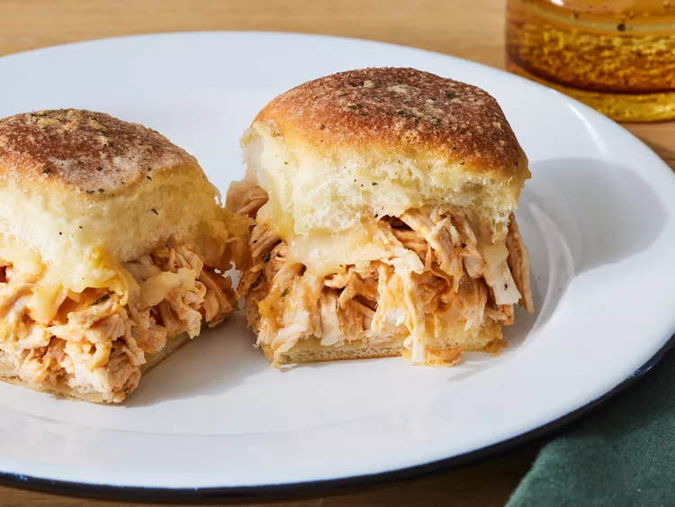

Buffalo Chicken Sliders

Description
These Buffalo chicken sliders, made with shredded chicken tossed in spicy Buffalo sauce and ranch dressing, baked on Hawaiian sweet rolls with plenty of melty cheese, are good for a game day crowd, or a quick and easy family dinner.
Ingredients
- Hawaiian Sweet Dinner Rolls
- Cheese
- Chicken
- Hot Sauce
- Ranch
- Ranch Mix
- Butter
Steps
- Cut the rolls in half horizontally, place the bottom half on a baking sheet, and sprinkle with cheese.
- Stir together the chicken, hot sauce, ranch, and some of the ranch dressing mix.
- Spread the chicken mixture over the bottom half, then top with the remaining cheese.
- Place the top half over the chicken and brush the rolls with butter. Sprinkle the tops of the rolls with the remaining dry ranch mix.
- Bake until the cheese is melted and the tops are golden brown.